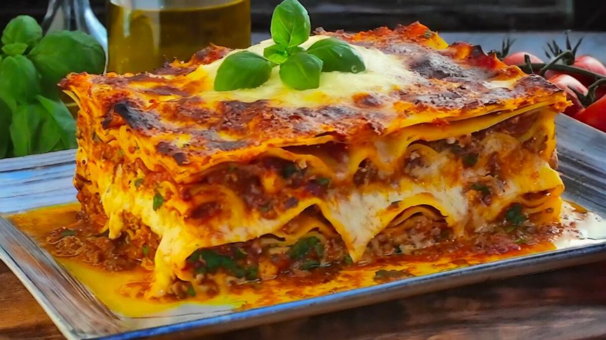

Un pasticho sencillo que salva el desayuno.
Esta receta es sencilla y satisface a toda la familia. ¡Pruébala esta noche!
Ingredientes
- 1 libra de carne picada magra
- 1 frasco (32 onzas) de salsa para espaguetis
- 32 onzas de requesón
- 3 tazas de queso mozzarella rallado, divididas
- 2 huevos
- ½ taza de queso parmesano rallado
- 2 cucharaditas de perejil seco
- sal al gusto
- pimienta negra molida al gusto
- 9 laminas de pasticho
- ½ taza de agua
Pasos
- Precalentar el horno a 175ºC (350ºF).
- Calentar una sartén grande a fuego medio. Añadir la carne picada y cocinar hasta que esté dorada, de 8 a 10 minutos. Escurra la grasa. Añada la salsa de espaguetis y cocine a fuego lento durante 5 minutos.
- Mezcle el requesón, 2 tazas de queso mozzarella, los huevos, 1/2 del queso parmesano rallado, el perejil seco, la sal y la pimienta en un bol grande.
- Extender 3/4 de taza de salsa en una fuente de horno de 9x13 pulgadas. Cubra con 3 fideos de lasaña crudos, 1 3/4 tazas de la mezcla de queso y 1/4 de taza de salsa; repita las capas una vez más. Cubra con los 3 fideos restantes, la salsa, la mozzarella y el queso parmesano. Añada 1/2 taza de agua a lo largo de los bordes de la fuente. Cubra bien con papel de aluminio.
- Hornear en el horno precalentado durante 45 minutos. Destapar y hornear 10 minutos más. Dejar reposar 10 minutos antes de servir.